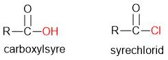
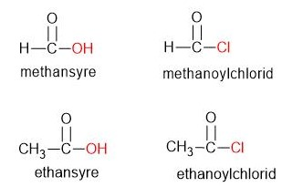

Syrechloriders struktur
Hvis man i en carboxylsyre erstatter OH-gruppen med Cl, får man en syrechlorid.

Syrechloriders navne
Man får en syrechlorids navn på følgende måde:
navnet på tilsvarende alkan + "oylchlorid".
De to eksempler på figuren skulle forklare det.

Anden navngivningsmetode
Man kan også navngive ved at bruge navnet på tilsvarende carboxylsyre og tilføje endelsen "chlorid". Navnene på de to ovenstående bliver således methansyrechlorid og ethansyrechlorid.